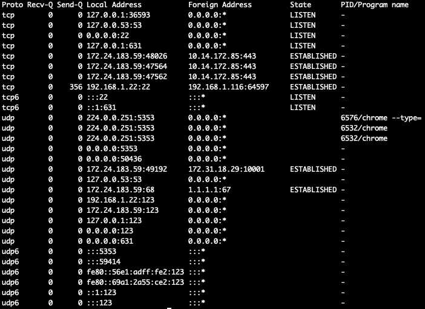
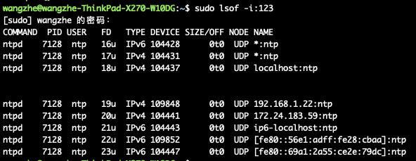
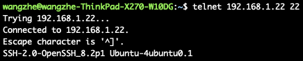

Linux系统中的端口存活查询与验证
前言
在Linux系统中，我们常常需要查询某个端口是否存在，例如:
- 验证某个服务/进程是否正常启动，最简单的方法就是验证该端口是否存在。
- 服务启动失败时，判断是否端口已经被其他进行占用时，也需要验证该端口是否已经被绑定。
对于很多同学来说，可能都知道一些常见的命令，例如 lsof、 telnet 等命令，但是对相关命令往往并不是很了解，因此在使用过程中经常会遇到各种问题。
为此，我们将在本文中针对Linux中端口的检查和存活性验证进行详细的说明。
端口查询
查询端口占用情况最常用的工具就是 netstat 以及 lsof 了，下面，我们来依次讲解两个命令:
netstat
netstat用来查看系统当前系统网络状态信息，包括端口，连接情况等，常用方式如下:
netstat -atunlp
其中，各个参数的含义如下：
- -t : 指明显示TCP端口
- -u : 指明显示UDP端口
- -l : 仅显示监听套接字(LISTEN状态的套接字)
- -p : 显示进程标识符和程序名称，每一个套接字/端口都属于一个程序
- -n : 不进行DNS解析
- -a : 显示所有连接的端口

当前，在上面的输出中，我们会直接得到所有的端口绑定信息，查询起来比较复杂，因此，我们常常会搭配 grep 命令来使用，查询对应的进程或指定的端口。
lsof
lsof的作用是列出当前系统打开文件(list open files)。 通过-i参数也能查看端口的连接情况，-i后跟冒号端口可以查看指定端口信息，直接-i是系统当前所有打开的端口。
最简单的使用方式如下：
lsof -i:${ports}

端口存活性验证
为了验证某一端口是否能够正常访问，我们常常会使用的命令就是 telnet 和 nc 了，下面来进行具体的说明：
telnet
telnet是一个用于验证TCP端口连接情况的命令行工具，常用使用方式如下：
telnet ${ip} ${port}
连接成功时，示例如下：

连接失败时，示例如下：

nc
telnet命令仅适用于tcp协议的端口验证，对于udp协议的端口而言，则需要使用 nc 来进行验证。
Ubuntu下的安装方式:
apt-get install netcat
UDP端口检测方式：
nc -vuz ${ip} ${port}
其中:
- -v 表示打印详细模式
- -u 表示UDP协议，默认为TCP协议
- -z 表示仅检测端口，不发送数据
连接成功时，示例如下：

连接失败时，示例如下：